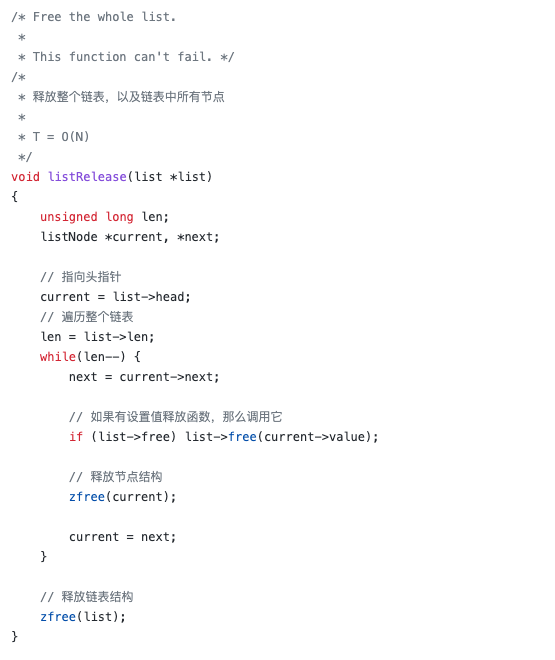
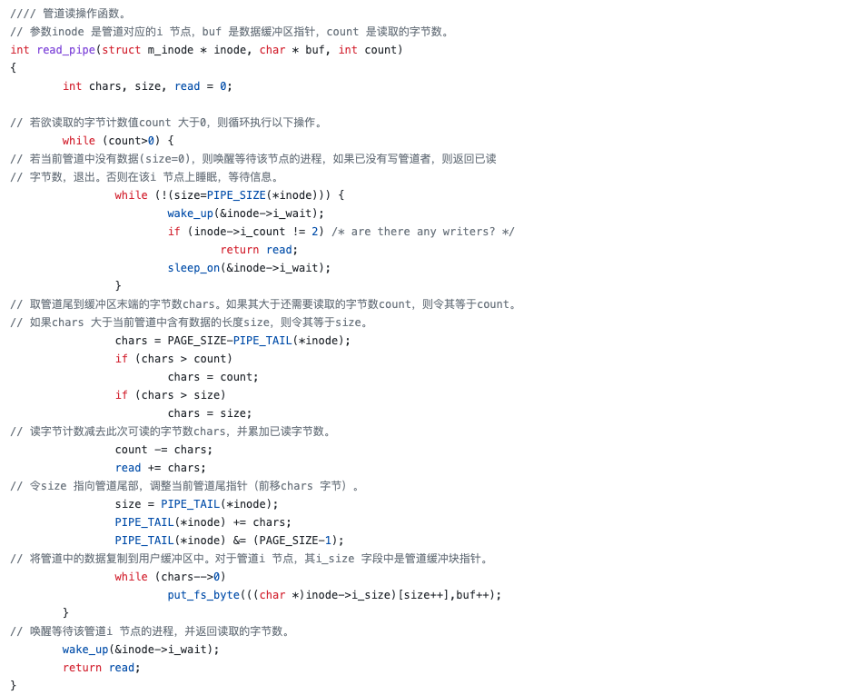
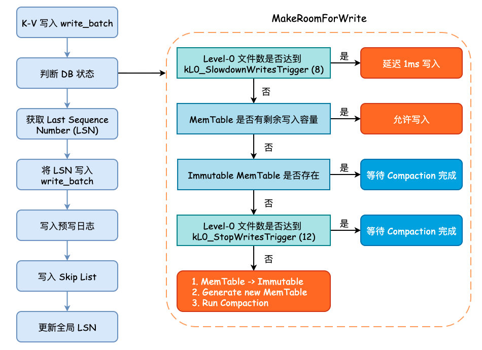
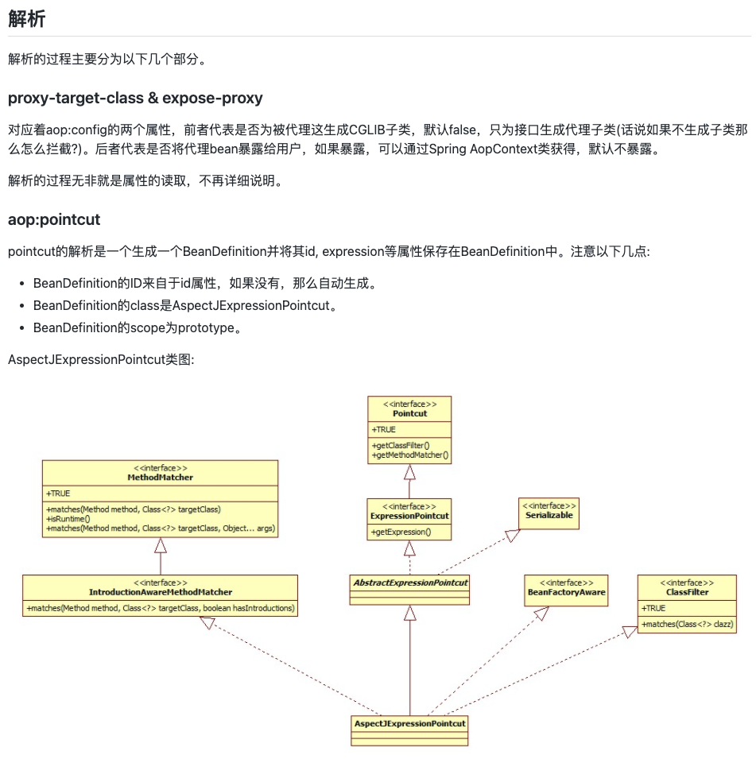
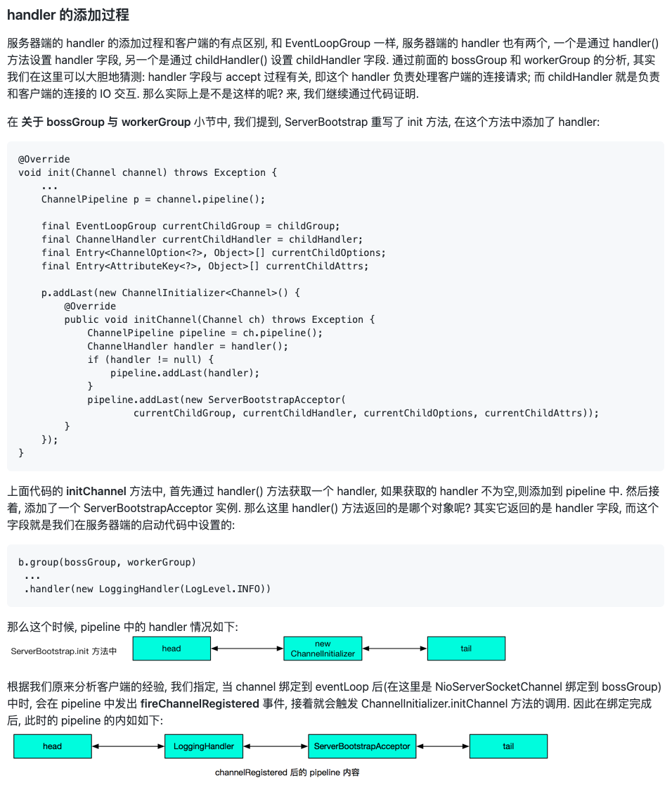
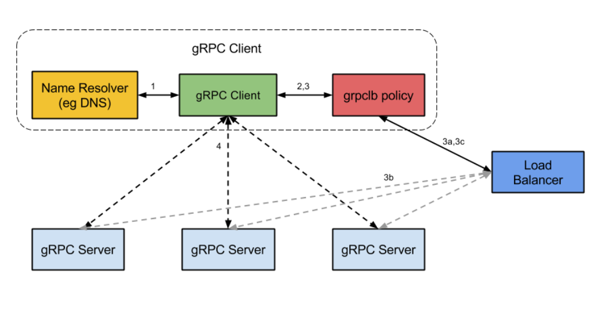
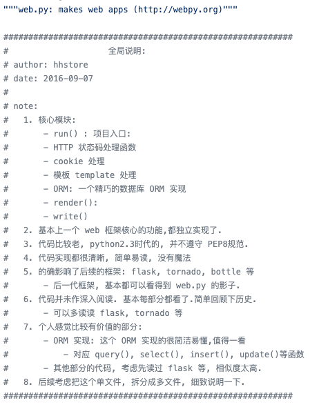
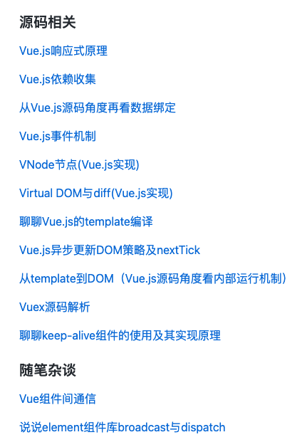
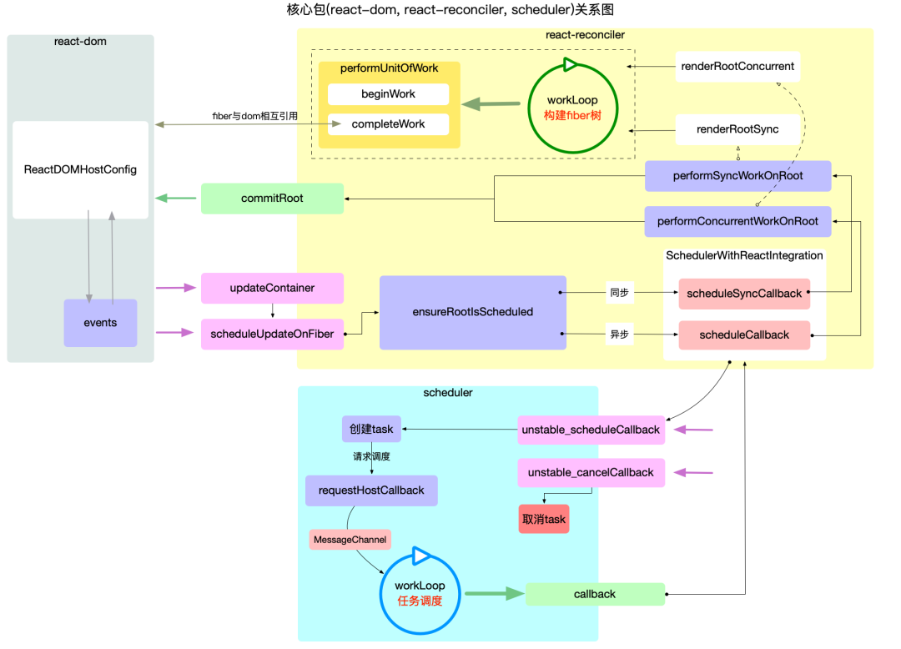

如何轻松阅读github项目源码
一、C
1.1 redis-3.0-annotated（Redis）
Star 数：7.9k｜语言：C
Redis 是一个基于内存、分布式、可选持久性、开源的 KV（键值）存储数据库。
该项目是 Redis 3.0 版本源码注释。 
https://github.com/huangz1990/redis-3.0-annotated
1.2 linux-0.12（Linux）
Linux 是一种开源的类 UNIX 操作系统。
该项目是 Linux 内核 0.12 版本完全注释版。
我最初是在 GitHub 找到了别人上传的旧版（0.11）注释源码，一通搜索下发现了原作者赵炯老师的网站。第一版发布于 2003 年，最新更新于 2021 年，维护了 18 年。这个阅读 Linux 源码的项目，虽然没有上传到 GitHub 但是内容、注释的源码、配套工具全部开源。 
http://www.oldlinux.org/Book-Lite/
二、C++
2.1 reading-source-code-of-leveldb-1.23（LevelDB）
Star 数：15｜语言：C++
LevelDB 是一个由 Google 开源的持久化 KV（键值）存储数据库。
该项目是 LevelDB 1.23 版本源码阅读笔记，包括：分析 DB 运作流程、STable 等文件格式以及 Compaction 过程。

https://github.com/SmartKeyerror/reading-source-code-of-leveldb-1.23
三、java
3.1 spring-analysis（Spring）
Star 数：10k｜语言：Java
Spring 框架是一个开源的 Java 全栈应用程序框架和控制反转容器实现，多用于构建企业级 Web 应用。
该项目是 Spring 4.3.18 版本的源码阅读笔记，包含源码注释、类图、文字描述。

https://github.com/seaswalker/spring-analysis
3.2 learn_netty_source_code（Netty）
Star 数：1k｜语言：Java
Netty 是一个 Java 异步事件驱动的网络应用框架。
该项目是 Netty 4.0.33 版本源码分析教程。

https://github.com/yongshun/learn_netty_source_code
四、Go
4.1 grpc-read（gRPC）
Star 数：154｜语言：Go
gRPC 是 Google 发起的一个开源 RPC 系统，基于 HTTP/2 协议传输，使用 Protocol Buffers 作为接口描述语言。
该项目是 gRPC Go 版本实现：grpc-go 的源码解读。

https://github.com/lubanproj/grpc-read
五、python
5.1 annotated-py-projects
Star 数：312｜语言：Python
该项目包含多种 Python Web 框架源码解读，包括：Flask、Sanic、web.py 等项目的源码注释。

https://github.com/hhstore/annotated-py-projects
六、JavaScript
6.1 learnVue（Vue.js）
Star 数：11k｜语言：JavaScript
Vue.js 是一个用于创建用户界面的开源 JavaScript 框架。
该项目包含 Vue.js 源码注释以及作者学习 Vue.js 源码过程中的一些心得和收获。

https://github.com/answershuto/learnVue
6.2 react-illustration-series（React）
Star 数：1.3k｜语言：TypeScript
React 是一个声明式、高效且灵活的用于构建用户界面的 JavaScript 库。
该项目是以图文的方式解读 react@17.0.2 源码，包含大量配图。
